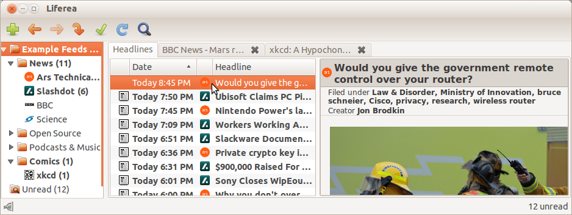

Liferea
About
Liferea is a feed reader/news aggregator that brings together all of the content from your favorite subscriptions into a simple interface that makes it easy to organize and browse feeds. Its GUI is similar to a desktop mail/news client, with an embedded web browser.

Distinguishing Features
- Read articles when offline.
- Force fetch full article text using HTML5 extraction
- Subscribe to HTML5 websites that do not even have a feed!
- Synchronizes with
- Google Reader API (TheOldReader, FreshRSS, FeedHQ, Miniflux, ...)
- Reedah
- TinyTinyRSS
- Permanently save headlines in news bins.
- Match items using search folders.
- Play Podcasts in Liferea
More Information
Documentation
- Installation
- User Manual v1.14 (English)
- User Manual v1.14 (German)
- User Manual v1.14 (Italian)
- Liferea Tricks
- Advanced